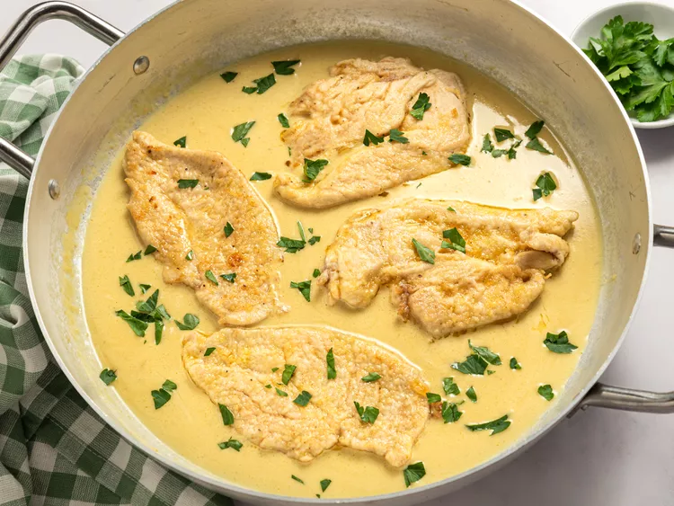

Home
Creamy Honey Mustard Chicken

Ingredients
- scant 1/3 cup all-purpose flour
- 1/2 teaspoon salt
- 1/4 teaspoon freshly ground black pepper
- 1/4 teaspoon granulated garlic
- 1/4 teaspoon paprika
- 4 (6 ounce) chicken breast cutlets
- 2 tablespoons unsalted butter
- 2 tablespoons olive oil
- 1/2 cup low-sodium chicken broth
- 1/2 cup dry white whine
- 2 tablespoons honey
- 2 tablespoons Dijon mustard
- 1 tablespoon cold unsalted butter
- 1/2 cup heavy cream
- fresh minced parsley for garnish (optional)
Step by step
- Gather all ingredients
- In a large resealable plastic bag, combine flour, salt, pepper, granulated garlic and paprika. Mix the dry ingredients inside the bag by pinching the bag several times
- Pound chicken cutlets to 1/2-inch thickness on a work surface and add to the flour mixture. Seal the bag, and toss and move chicken inside the bag until lightly coated with flour mixture
- Heat butter and olive oil in a large skillet over medium heat. When butter stops sizzling, carefully add chicken and cook until no longer pink in the center, about 5 minutes per side. An instant-read thermometer inserted near the center should read 165 degrees F (74 degrees C). Transfer chicken to a plate and keep warm
- Pour chicken broth and wine into the same skillet and bring to a boil while scraping the browned bits off the bottom of the pan. Boil about 2 minutes
- Stir honey and mustard into wine mixture, and simmer about 1 minute. Remove from heat and stir in 1 tablespoon cold butter until melted, then stir in cream
- Return chicken to the skillet. Serve chicken warm with sauce. Garnish with parsley
Note: The flour will aid browning and help thicken the sauce, but will not form a thick crust.
Enjoy your creamy honey mustard chicken!